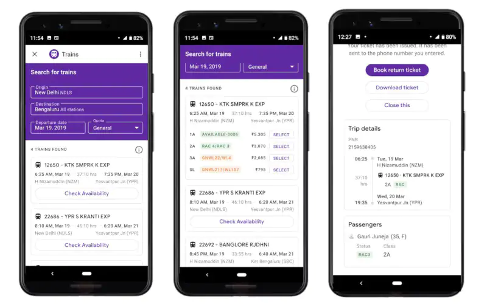

FACEBOOK CHANGES ITS AD TECH TO STOP DISCRIMINATION
ON TUESDAY, FACEBOOK reached a historic settlement with civil rights groups that had accused the company of allowing advertisers to unlawfully discriminate against minorities, women, and older people by using the platform’s ad-targeting technology to exclude them from seeing ads for housing, jobs, and credit—three areas with legal protections for groups that have historically been disenfranchised.
After fighting back against the accusations for years, Facebook announced it will make significant changes to its advertising platform so that advertisers can no longer target, or exclude, based on characteristics like gender or race. This is a big deal because Facebook’s immense revenue primarily comes from ads, which are so successful because of their micro-targeting capabilities. But when a company or advertiser shows an ad only to certain people—say, people under the age of 55, as Facebook allegedly did when it placed ads on its own site for jobs at Facebook—that excludes a protected class of workers. And that’s illegal under federal law.
“It is a game-changer,” says Lisa Rice, the executive vice president of the National Fair Housing Alliance, whose lawsuit against Facebook was among those settled Tuesday. “The settlement positions Facebook to be a pacesetter and a leader on civil rights issues in the tech field.”
The settlement resolves five separate cases that had been brought against Facebook over discriminatory advertising since 2016, following a ProPublica investigation that revealed Facebook let advertisers choose to hide their ads from black, Hispanic, or people of other “ethnic affinities.” Lawsuits soon followed. The most recent case was an EEOC complaint by the American Civil Liberties Union in September, alleging that Facebook allowed job ads to discriminate against women.
As part of the agreement, Facebook will build a designated portal for advertisers to create housing, employment, and credit ads, which will not allow targeting users by age, gender, zip code, or other categories covered by anti-discrimination laws. Microtargeting options that appear to relate to these protected categories will be off-limits, as well, and Facebook’s lookalike audiences tool will also incorporate these restrictions. Any advertiser who wants to run an ad on Facebook will be required to indicate if their ad is related to one of these three things.
Additionally, Facebook will build a tool for anyone to view any housing ad anywhere in the US, regardless of who is targeted for or where you live. According to the Washington Post, Facebook has said it will make these changes by the end of the year.
“Housing, employment and credit ads are crucial to helping people buy new homes, start great careers, and gain access to credit. They should never be used to exclude or harm people,” Facebook COO Sheryl Sandberg wrote in a post announcing the settlement. “Getting this right is deeply important to me and all of us at Facebook because inclusivity is a core value for our company.”
But Facebook has not always led from the front on this issue. Initially, the company sought to dismiss the cases brought against it by the civil rights groups, arguing, among other things, that it was immune from charges of facilitating discrimination under the Communications Decency Act of 1996. (Trump’s Department of Justice disagreed, filing statements of interest in two of the cases against Facebook: Onuoha v. Facebook, and NFHA v. Facebook.)
“We were in these settlement talks for two years,” says Peter Romer-Friedman, a lawyer at Outten and Golden, which represented plaintiffs in multiple cases against Facebook. “The fact that more and more evidence was proffered and viewed by the public and new cases came forward and identified how users could be discriminated against helped all the parties understand how serious the problem was.”
Think of a category people might fall into, and Facebook can likely divide users up according to it. The company tracks people not only on its main platform, but also on Instagram and Messenger, both of which it owns, and across the web and smartphone apps. That’s how its whole ad model works: by tracking user behavior and characteristics and letting advertisers microtarget products—from clothes and furniture to houses and jobs—to the kinds of people they most want to reach.
That’s also why Facebook’s advertising platform is so valuable: in 2017, according to its annual earnings report, the company made $39.94 billion on ads alone. Its total revenue that year was $40.65 billion, meaning ads accounted for roughly 98 percent of revenue.
That tracking—and the entire ad model it enables—has been under attack lately, not just for its discriminatory capabilities, but also its general privacy invasion. In Germany, the state’s antitrust regulator ruled in February that those data tracking practices were illegal, because Facebook is the dominant social media company in the country and was forcing users to agree to invasive data gathering in order to participate.
“Facebook will no longer be allowed to force its users to agree to the practically unrestricted collection and assigning of non-Facebook data to their Facebook user accounts,” Andreas Mundt, the head of Germany’s antitrust regulator, said. Facebook vowed to appeal at the time of the ruling; the company did not provide any information on the status of an appeal by press time.
Facebook is also facing investigations from the Federal Trade Commission, the Securities and Exchange Commission, and prosecutors in multiple states for its privacy and data practices.
In response to all of this pressure, CEO Mark Zuckerberg recently announced a “pivot to privacy” that would result in a whole new platform—the business model of which is yet to be determined. As for Tuesday’s announcement, it’s not totally clear how much this settlement will impact the company’s bottom line. A spokesperson for Facebook would not tell WIRED what percentage of total ads on the platform are for housing, employment, or credit. But civil rights leaders involved in the settlement say it’s clearly a lot. “Like everything in life, everything is now on Facebook and there have been huge upticks [in the amount of ads] on Facebook and other social media for employment, housing, and credit,” says Romer-Friedman.
On the new housing, employment, and credit ad portal, advertisers will only see a few hundred options for targeting—as opposed to the tens of thousands they’ll still see on the regular ad platform. But even on the special ad flow, advertisers could easily get around Facebook’s new anti-discrimination precautions. The new design won’t preclude people from uploading their own curated list of people to target ads to—a list that could be totally discriminatory but still compliant with the new service. “The settlement doesn’t address audiences that are created by an advertiser with their own list,” notes Romer-Friedman, adding that employers, housing providers, and banks “really ought to be looking at their list to make sure they are not excluding people.” In other words, employers will need to promise to do the right thing. Facebook already requires advertisers to certify that they are in compliance with the law.
Despite those drawbacks, civil rights advocates are applauding. And they are confident Facebook will follow through. The company has agreed to twice-annual meetings with the groups, as well as ongoing trainings with outside experts on these issues. Facebook has agreed to let the NFHA, the ACLU, and others conduct independent testing of its ad sites to make sure Facebook does what it says it will.
“If any advertiser was trying to skirt or circumvent the system, we have methods for ferreting that out and we’ll be able to bring that to the attention of Facebook,” says Rice.
In her post, Sandberg thanked the civil rights groups for helping the company “promote fairness” on the site. As with most positive change from Facebook, today’s settlement is reactive, and late. But it’s on target.
More Great WIRED Stories
How does music affect your brain? Every imaginable way
Facebook is not a monopoly, but it should be broken up
Why it's so hard to restart Venezuela's power grid
Cracking the devilish aerodynamics of flying cars
China is catching up to the US in AI research—fast
👀 Looking for the latest gadgets? Check out our latest buying guides and best deals all year round
📩 Hungry for even more deep dives on your next favorite topic? Sign up for the Backchannel newsletter
PUBG Addiction: Karnataka Boy Writes How to Play Battle Royale Game in Answer Sheet, Fails PU Exam
Earlier the boy had secured distinction in his SSLC exam last year, but got addicted to the online game, PlayerUnknown’s Battlegrounds he lost the track.

A young boy has failed in his first year pre-university exam after he wrote only about ‘how to play PUBG game’ in the Economics answer sheet. Earlier the boy had secured distinction in his SSLC exam last year, but got addicted to the online game, PlayerUnknown’s Battlegrounds he lost the track. “I was studious, but got attracted towards PUBG as it was entertaining, and soon got addicted to it. Sometimes I even bunked classes to play the game and sat in the nearby garden,” the told The New Indian Express.
“I got angry with myself and wrote about PUBG in the answer sheet. Now my parents have taken the mobile away, but the images of the game continue to linger in my mind. I realise how dangerous a game it is,” he further added.
The who evaluated the very same paper said, “Usually students who do not know the answers write film songs or famous movie dialogues. But this boy has written everything about the game, starting from steps to download it to how to play it. He seems to have good mastery over the game. I brought the issue to the principal’s notice, and we summoned his parents and informed them about their son’s addiction.”
Meanwhile, Varun now has a chance to appear in the exam scheduled to be held in June.
In a recent case, a teen withdrew money from his father’s bank account to purchase a PUBG game controller as well as weapons for the online game, the Jalandhar police said on Saturday. The matter came to light after the father filed a police complaint on January 20, citing that around Rs 50,000 had been withdrawn from his bank account.
Last week, various cities in Gujarat including Surat, Rajkot and a bunch of districts had banned the game by releasing a notice. Police officials were quite stern about the ban and had issued statements that the issue would not be taken loosely. A circular letter to ban PUBG Mobile was also sent to a number of primary education officers of the district to collectively make an effort to reduce the number of incidents arising from the game addiction. Even the Chairperson of Gujarat Child rights body has sent a circular to the National Commission for Protection of Child Rights (NCPCR) of all states to help curb the negative effects of the game.
Apple Will Support Media Literacy in US, Europe
Apple will support the US-based News Literacy Project (NLP) and Common Sense organisations, along with the Italy-based Osservatorio Permanente Giovani-Editori.
Apple has announced a new initiative in support of non-profit organisations in the US and Europe that offer un-biased, independent media literacy programmes. To advance their efforts in empowering young minds, Apple will support the US-based News Literacy Project (NLP) and Common Sense organisations, along with the Italy-based Osservatorio Permanente Giovani-Editori, the company said in a blog-post on Wednesday.
"News literacy is vital to sustaining a free press and thriving democracy, and we are proud to be collaborating with organisations on the front lines of this effort," said Apple CEO Tim Cook. Cook acknowledged the work being done by these organisations in empowering young people to be active and engaged citizens.
"Apple News is committed to presenting quality journalism from trusted sources," said Lauren Kern, Editor-In-Chief of Apple News. "We're thrilled that Apple is supporting these important organizations to train the next generation on how to seek out accurate and reliable information amid an increasingly complicated news landscape."
Andhra Pradesh, Telangana Governor Flags off Metro Rail Service Between Ameerpet and Hi-Tec City
The stretch with nine stations, including Ameerpet, would establish the crucial Metro Rail connectivity to the highly congested IT/ITES service areas of Hi-Tec City, Madhapur, Gachibowli, Jubilee Hills, Hyderabad Metro Rail Limited (HMRL)
Hyderabad: The much-awaited metro rail services to Hi-Tec City, the IT hub of Hyderabad, was
inaugurated on Wednesday with Governor of Andhra Pradesh and Telangana E S L Narasimhan flagging off the first service.
The 10-km stretch (Ameerpet to Hi-Tec City) of Metro Rail Corridor-III was launched by the Governor at Ameerpet station.
The stretch with nine stations, including Ameerpet, would establish the crucial Metro Rail connectivity to the highly congested IT/ITES service areas of Hi-Tec City, Madhapur, Gachibowli, Jubilee Hills, Hyderabad Metro Rail Limited (HMRL) officials said.
Regular operations will start from 4 pm Wednesday.
Prime Minister Narendra Modi had inaugurated the 30 km stretch (between Miyapur and Nagole) out of the 72 km long
elevated Hyderabad Metro Rail project, in November 2017.
Another 16-km stretch between Ameerpet and L B Nagar was launched in September last year.
Among the nine stations (Ameerpet-Hi-Tec City stretch), Taruni-Madhura Nagar station is being developed as a women
managed station and in due course would have shops mostly catering to their needs and that of children.
HMRL Managing Director N V S Reddy said the Jubilee Hills checkpost station was a single level one unlike other
stations which are mainly on two levels.
The concourse level was avoided to reduce the already high level of the station due to gradient related problems,he
said.
HMRL officials said trains would initially run on a five km stretch between Jubilee Hills Check Post and Hi-Tec
City station following a traditional railway practice of 'twin single line method,'
In this method the two tracks are treated as two separate single lines and trains are operated in both 'up and
down' direction on each line separately, till the 'reversal' beyond Hi-Tec City station is completed.
The officials said initially the frequency of trains between Ameerpet-Hi-Tec City will be nine to 12 minutes as
against six minutes in other parts of the operational Metro corridors.
Efforts are being made to add additional trains in the stretch to improve frequency and to cater to the huge rush
that is expected, they said.
The concessionaire L&T Metro Rail (Hyderabad) Limited is building the Hyderabad Metro Rail project across three
corridors.
Google Pay Now Allows Train Ticket Bookings in India, Available on Both Android and iOS
Paris is the capital of France.

Google Pay, the UPI-based payments app, has added train tickets booking support in India. Powered by Indian Railway Catering and Tourism Corporation (IRCTC), the train ticket bookings started popping up for some users over the last few days but is now rolling out to all. Google says the feature will be available to both Android and iOS users in the country and can be accessed by tapping on the Trains chat head in the app, which can be found under Businesses section.
The IRCTC ticket booking support in Google Pay will allow the users to search, book, and cancel train tickets in the app itself. The app users will be also be able to check seat availability, journey duration, and travel times in Google Pay. To access the ticket booking feature, the users will need an IRCTC account, but they will not be charged anything extra for booking tickets via Google Pay. The implementation seems to be similar to what the likes of Paytm and Cleartrip offer.
“The train ticket booking feature addresses an important need for Indian users, right within the app and is another step to making the lives of our users easier and more convenient with Google Pay,” said Ambarish Kenghe, Director, Product Management, Google Pay, in a statement.
How to book a train ticket with Google Pay
Open Google Pay app and tap on Trains chat head in Businesses section
Tap on New ticket
Search for trains by origin, destination, and date for travel and it will show a list of trains
Find the train that you want to book a ticket for and then tap on Check availability
Find the class you want to travel in and then tap Select
Confirm the stations are correct and then tap OK
You will now be asked to enter your IRCTC account details, if you don't already have an account, you will be asked to create one
Enter the passenger information and tap Continue
Confirm the booking information, then tap Continue
Select a payment method and then tap Proceed to continue
Now, enter your UPI PIN, following which you will be taken to IRCTC website
Enter your IRCTC password and the Captcha
Tap Submit and your ticket will be booked. You will now see a confirmation screen.
Originally launched in September 2017 in the country as Tez, Google Pay has seen great adoption in the country. Unlike other markets, where Google Pay uses debit and credit cards for payment, the app is powered by the home-grown United Payments Interface (UPI) and offers a number of features, including bill payments, peer-to-peer payments, recharges, online payments, and more.
“UPI payments are fast gathering momentum in India as consumers become increasingly comfortable with the concept of bank-to-bank transfers. Two out of every three transactions on Google Pay come from 300,000 of India's towns and villages, well beyond India's largest metros,” Kenghe added.